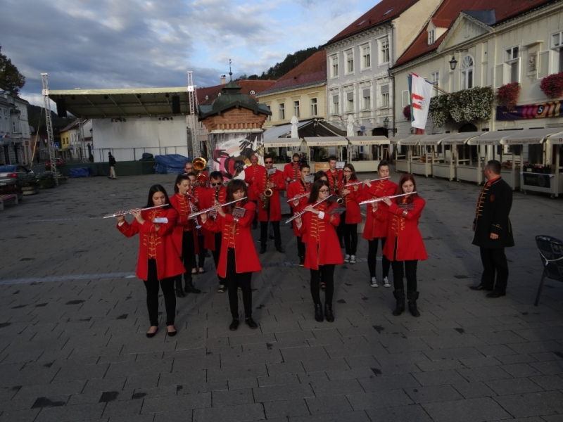

← Sva događanjaDogađanja · Treći vikend u listopadu
Dan grada Samobora
Dan grada Samobora obilježava se trećeg vikenda u mjesecu listopadu, a traju puna četiri dana. Povjesničari procjenjuju kako je tada kralj Bela IV. 1242. godine Samoboru darovao Povelju slobodnog kraljevskog trgovišta što znači da su Samoborci u sudbenim poslovima biil neovisni i slobodno su raspolagali svojom imovinom. Danas samoborsku gospodarsku tradiciju, uz poljodjelce, vinogradare i stočare, čini cijeli niz autohotnih obrta.
Posljednjih godina se sve više razvija proizvodnja greblica, bermeta, meda, kremšnita, salama, češnjovki i ostalih domaćih proizvoda. Svime time Samobor privlači nove stanovnike i posjetitelje. Proslava je puna različitih događanja, od nastupa djece i osnovnoškolaca, samoborskih umjetnika, izložbi i drugih kulturno - umjetničkih programa.